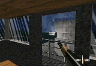
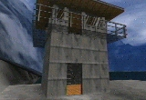
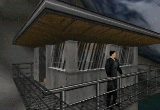
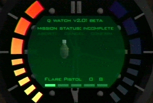

Vous trouverez dans cette Partie presque tous les Mystères qui entourent le Barrage ! Pour plus de renseignements sur le Barrage, il y a la Section Beta où on en apprend plus sur les Objectifs supprimés, les Objets disparus etc. Y a aussi pleins de Codes Action Replay / Gameshark.
L'Ile Perdue
De tous les Niveaux de Goldeneye, le Barrage est certainement le plus vaste, juste après Surface peut-etre. C'est aussi le Niveau ou on trouve un GRAND Lac, avec au fond une Petite Ile qui ne sert plus à grand-chose. Beaucoup ne peuvent pas voir ce qui s'y cache, faute d'Action Replay. Vous trouverez en Bas des Codes au cas ou vous voudriez aller voir par vous-meme.

On peut aussi grimper dans la Tour pour admirer le Paysage, même si y a pas grand chose à voir. Les images avec Bond ont été faites avec le Debug Mode, qui permet de se déplacer HORS du Corps de Bond. Ahurissant, et celà sert dans pas mal de Niveaux vous verrez ! Note - En fait, on ne peut pas monter dans la Tour. On peut passer au travers de TOUT ce qu'il y a sur l'Ile. Et avec un coup de Moonjump, on a de belles vues.




Le Drone Gun de l'Ile ne fonctionne plus, comme on s'y attendait. Ca aurait été une Pure Fourberie de la part de Rare de virer l'Ile du Jeu en laissant branché le Drone Gun, non ? Quoiqu'il en soit, on peut penser que Bond aurait du le détruire par exemple, comme dans Runway ! On peut aussi zoomer sur l'Ile depuis le Barrage, si le Temps n'est pas trop brumeux.


Deux Photos concernent les Objectifs retirés. Le Premier était de faire comme dans le Film, c'est à dire plonger du Barrage, puis sortir le Piton-Gun pour s'accrocher au Ciment tout en bas. Dans la Version Finale, il suffit de sauter et c'est fini. La Deuxième Photo nous montre le Flare-Pistol, qui sert à tirer des fusées éclairantes, ainsi que le Bungee, qui est en fait l'Elastique. Avec un Gameshark, on peut en fait changer les Noms des Armes et accéder aux Objets retirés de la Version Finale (juste leur Nom dans l'Inventaire) pour déduire ce qui se passait dans la Version Beta.


Choses Diverses
Le Garde Aveugle
Si vous tracez dès le Début vers la Fin du Tunnel, vous tomberez sur un Garde avançant tranquillement sans vous voir ! Evidemment, si vous commencez à lui tirer dessus, il va vous remarquer et agira comme n'importe quel Ennemi !
Le Garde Désarmé
La même chose, mais en allant plus loin vers la 1ere Alarme, vous verrez un Garde désarmé ! Il ne fera rien du tout si vous essayez de lui tirer dessus, contrairement aux Gardes de Perfect Dark qui peuvent agir à mains nues...

Le Camion Rouge
Avec le Gameshark, on peut faire apparaitre un autre Camion. Il est Rouge, et roulera comme le Vert jusqu'a son point d'arrêt juste après le Sas.
Le Camion Vert
Beaucoup de rumeurs sur ce Camion, que l'on devait faire sauter afin de récuperer le Fameux Elastique pour la Fin du Niveau.
Le Bateau
Avec l'Action Replay / Gameshark, on peut faire apparaitre plein de Trucs à la place du Camion Vert au Début. Ici, c'est un Bateau Vert avec une Etoile Rouge. A mon humble avis, on devait l'utiliser pour rejoindre l'Ile au Fond du Lac et compléter un Objectif.

L'Entrée de Facility
A la fin du Niveau, vous sautez dans le Vide. Maintenant, avec le Code qui supprime les Cinématiques de Fin, on atterrit tout en bas, et qu'est-ce qu'on voit ? L'Entrée de Facility ! Comme dans le Film ! A l'Origine, on devait sauter et utiliser le Pistolet Piton (Piton Gun) afin de s'accrocher...

La Tour N°1
Si vous notez bien les Numéros des Tourelles du Barrage, vous trouverez la Tour 2, 3 et 4. Mais où est la 1 ? Peut-etre celle au Fond du Lac...


Conclusion
Pour un Premier Niveau, tous ces Objectifs, ça faisait un peu trop. En plus des Objectifs Normaux, on devait récuperer l'Elastique dans le Camion du Début, aller sur l'Ile pour choper le Piton Gun, détruire le Drone Gun de l'Ile pour que l'Avion ne se fasse pas exploser 2 Niveaux plus tard, puis sauter et réussir le Coup du Piton Gun à la Fin. Pas trop essoufflé ça va ? L'Ile reste donc plantée là, le Drone Gun ne marche plus, et on peut récuperer les Noms des 3 Objets virés de ce Niveau.
Avec d'autres Codes, on peut aussi faire apparaitre le Bateau servant à aller sur l'Ile. Je pense qu'il n'y a plus trop rien à dire sur cette Histoire. Personnellement, j'aurais bien aimé récuperer tous ces Objectifs dans le Mode 007, c'est à dire le Niveau de Difficulté au-dessus de 00, bien dur et bien costaud, avec des Objectifs tout partout !
Codes
- Enlever les Cinématiques de Fin (Cartouche) :
8002BED0 FFFF - Enlever les Cinématiques de Fin (Emulateur) :
80030980 FFFF
Pour utiliser la Sauvegarde, lancez le Jeu Goldeneye avec l'Emulateur, puis faites Système > Charger > Choisissez la Sauvegarde, et voilà ! Pensez à vous créer un Dossier Sauvegardes...